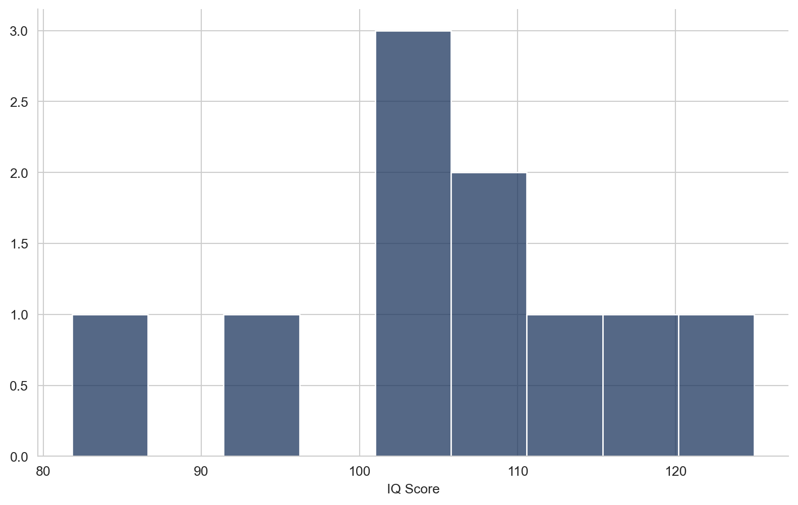
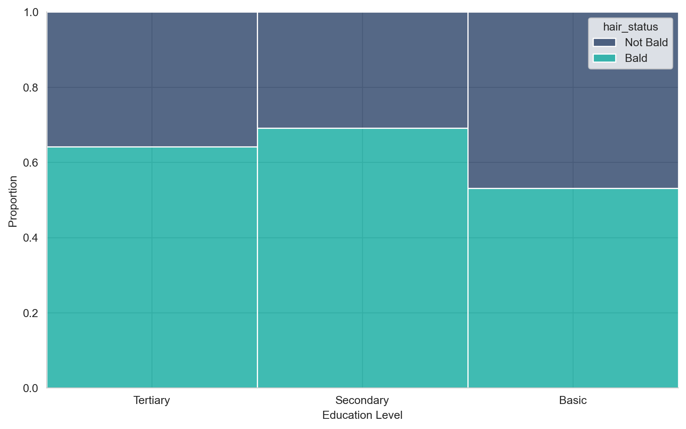

# packages needed to run the code in this section# !pip install pandas numpy matplotlib seaborn statsmodel# import packagesimport pandas as pdimport numpy as npimport scipy.stats as statsimport pingouin as pgimport matplotlib.pyplot as pltimport seaborn as snsfrom matplotlib import rcfrom tqdm.auto import tqdmfrom scipy.stats import norm# set plot stylesns.set_style('whitegrid')# set plot fontrc('font',**{'family':'sans-serif','sans-serif':['Arial']})# set plot colour palettecolours = ['#1C355E', '#00A499', '#005EB8']sns.set_palette(sns.color_palette(colours))# set random seednp.random.seed(10)
This chapter will cover a topic that is well known to many practitioners - hypothesis testing. Hypothesis testing is a popular approach for attempting to make inferences about data without being led astray by noise. Although hypothesis testing remains very popular, it has been much criticised because the most common framework for testing, Null Hypothesis Significance Testing (NHST), has faced increasing criticisms regarding it’s external validity. If you have ever come across discussions about the “replication crisis” in science, you will have read about the many issues concerning the use of statistical significance as a measure of evidence in science and the misunderstanding and misuse of p-values. The null hypothesis significance testing framework is another of the central culprits in this crisis.
Hypothesis testing may be one of the most prominent tools for statistical inference, but there is plenty of debate about how we should be doing it, and whether the method should be consigned to the history books of statistics, only to be remembered as that silly time in our lives when we used to do science really badly. Here I hope to be able to give readers a clear understanding of how hypothesis testing works, it’s biggest drawbacks, and some advice about how to carry out robust tests of hypotheses.
Beyond this, I will make a case for moving away from hypothesis testing and towards the estimation of effect sizes. In doing so, I will demonstrate how to carry out some common statistical tests, using the guidelines in this chapter to inform how tests are carried out and how the results are presented. I will attempt to thread the needle between caution and clarity1, but I recognise that this is not easy, and I’m not sure how successfully I will manage it!
The compromise that I make here is that this chapter will be like a really terrible Choose Your Own Adventure book, where you choose to take the short route, which lays out a process for carrying out hypothesis testing in a robust manner, or you can tread the long, arduous path through this subject. The intention is that the shorter path should give you everything you need, particularly for anyone that is unfamiliar with hypothesis testing. However, if you have are looking to improve your understanding of hypothesis testing, you can choose to expand the sections with further details.
5.1 The Motivation for Hypothesis Testing
A hypothesis is a statement about an effect that we expect to observe in our sample data, that is intended to generalise to the population. We do not know what the true effect in the population is, but we have a theory about what it might be, and we can test that theory using a hypothesis about what we will observe in the sample.
Our hypothesis might relate to how the mean value of a certain quantity of interest (like height) differs from one group to another, or how we expect the value of one quantity in our sample to change as the value of another quantity changes (like the effect of weight on height). A hypothesis test is a statistical method for empirically evaluating a hypothesis, to determine whether what we observe in our sample data is likely to exist in the population.
Hypothesis testing is effectively a statistical method for testing the compatibility of the observed data against a relevant hypothesised effect, often the hypothesis of zero effect. The measure of that incompatibility is a test statistic, which quantifies the distance between the observed data and the expectations of the statistical test, given all the assumptions of the test (including the hypothesised effect size). For example, if testing the hypothesis that there is no effect, a distribution under the assumptions of the statistical test, including the null hypothesis, is generated, and the test statistic measures the distance between the observed data and the null distribution. A p-value is then calculated from this test statistic, representing the probability of a test statistic at least as extreme as the computed test statistic if all the assumptions of the statistical test are true, including the hypothesis that is being tested.
The most common approach to testing hypotheses is the Null Hypothesis Significance Testing (NHST) framework, which involves testing the hypothesis that there is no effect (the null hypothesis) and, where it is possible to reject the null, this can be used as evidence that something is going on, to which this may help present evidence for the theory developed by the researcher (the alternative hypothesis).
Hypothesis testing can be valuable for a variety of different use-cases, but they are not without their issues. Despite those issues, they remain a useful tool when you want to know whether the difference between two groups is real, or whether it’s a product of noise, or when you are interested in knowing whether an effect size is different from zero. When you have a need to answer questions with greater precision, I would argue that there is a need to go further than hypothesis testing, but in industry, where speed and simplicity are often of equal importance to precision2, hypothesis testing can serve real value.
Further Details
The goal of NHST is to “adjudicate between two complementary hypotheses” (Blackwell 2023), the null hypothesis (\(H_0\)) and the alternative/research hypothesis (\(H_1\)). The null hypothesis, which is the hypothesis that no effect exists in the population, is our starting assumption, and we require strong evidence to reject it. If we are able to find strong enough evidence to reject the null, this moves us one step closer to making a case for our alternative hypothesis.
The reasoning for using two complementary hypotheses is based on Popper (1935)’s The Logic of Scientific Discovery. Popper argues that it is impossible to confirm a hypothesis, because hypotheses are a form of inductive reasoning, which involves drawing conclusions about a general principle based on specific observations. We cannot confirm a hypothesis because we cannot prove that it is true by generalising from specific instances. However, we can falsify a hypothesis. If what we observe in our sample provides strong evidence that our hypothesis cannot be true, then we can conclude (with a degree of certainty) that the hypothesis is false For a better understanding about the null and alternative hypothesis, I would recommend Josh Starmer’s StatQuest videos, embedded below:
When we carry out a hypothesis test, we are quantifying our confidence that what we observe in the sample did not occur by chance. If we are able to show that a effect is extremely unlikely to have occurred by chance, we can reject the null hypothesis. Rejecting the null doesn’t demonstrate that the observed effect can be explained by our theory, however, demonstrating that the observed data does not conform to our expectations given that all of our test’s assumptions, including the null hypothesis, are true, moves us one step closer to supporting our theory.
5.2 The Problems With Hypothesis Testing
Hypothesis testing serves an important purpose in science, both in academia and in industry. We use hypothesis testing to sift through noise in data to dry and draw conclusions, and this is a perfectly reasonable goal.
However, the dominant framework for testing hypotheses, Null Hypothesis Significance Testing, is rife with issues. The primary problems with NHST are that it defines tests in terms of them being statistically significant or not, based on an arbitrary threshold value for p-values, and it frames p-values as the primary concern when interpreting a statistical model. While p-values are still relevant, they are not the whole story (nor the main part of the story).
Further, the importance afforded to p-values in the NHST framework encourages certain common misconceptions about them, and the framing that prioritises them also makes those misconceptions even more harmful. P-values are not the measure of the substantive importance of the effect; they are not the probability that the null hypothesis is true; and finally, a statistically significant p-value does not confirm the alternative hypothesis, just as a non-significant p-values does not confirm the null. They are a measure of how surprising the observed data would be if the hypothesis being tested (like the null hypothesis), and all other assumptions of the statistical test, are true.
Although these problems are of real significance in academia, where precision is of the greatest importance,
Further Details
There are many complaints and criticisms that can be levelled at hypothesis testing. Here are some of the main ones.
P-Values & Statistical Significance
The biggest problems with NHST relate to the misuse and misunderstanding of p-values, and their dichotomisation in order to make arbitrary judgements about statistical significance. The extent of the issues surrounding p-values and statistical significance are so extensive that it led the American Statistical Association to make an official statement addressing the misconceptions and clarifying the correct usage of p-values (Wasserstein and Lazar 2016). The statement makes the point that p-values do not measure the probability that a hypothesis is true, or that the data was produced by random chance alone; nor should they be interpreted as measuring the size of an effect or the importance of a result; and that by themselves p-values are not a good measure of the evidence for a model or a hypothesis (Wasserstein and Lazar 2016). Unfortunately, these are all very common misconceptions that find their way into scientific research. The misconceptions go much further than this, however, as illustrated by Greenland et al. (2016). Greenland et al. (2016) build on the wider discussion to include statistical tests, laying out a total of 25 different misconceptions about statistical testing, p-values (and confidence intervals) and statistical power3. They make the case that the biggest culprit is the arbitrary use of thresholds for defining statistical significance, which frame p-values in problematic terms, reduce a need for critical thinking about findings, and are far too easily abused.
This discussion has even permeated some of the media (Aschwanden 2015, 2016). FiveThirtyEight have written about this issue in some detail, and their discussion of the topic is perhaps more accessible than the more detailed discussions going on. Aschwanden (2015) is a particularly good summary of the discussion around p-values, and does a good job highlighting that the issues around p-values and the “replication crisis” are not evidence that science can’t be trusted, but rather that this stuff is extremely difficult, and that it takes a community of scientists working towards the truth, to try and achieve results.
Garden of Forking Paths
Gelman and Loken (2021) add to the discussion by highlighting the role that the “garden of forking paths” approach to analysis, where there are many possible explanations for a statistically significant result, plays in the statistical crisis in science. It’s important to recognise how a scientific hypothesis can correspond to multiple statistical hypotheses (Gelman and Loken 2021), and to guard against this possibility. This effectively creates a “multiple comparisons” situation, where an analysis can uncover statistically significant results that can be used to support a theory by multiple “forking paths”. A “one-to-many mapping from scientific to statistical hypotheses” can create a situation that is equivalent to p-hacking but without the necessary intent (Gelman and Loken 2021).
One of the central questions that Gelman and Loken (2021) ask, is whether the same data-analysis decisions would have been made with a different data set. The garden of forking paths is driven by the fact that we devise scientific hypotheses using our common sense and domain knowledge, given the data we have, and we do not consider the myriad implicit choices that this involves. By not considering these implicit choices, we fail to account for the garden of forking paths.
Comparisons Are Not Enough
I think that the biggest issue with p-values themselves is that we have placed far too much value in them. We use methods that are designed to compute p-values, we define “success” as the discovery of a statistically significant finding, and we give little thought to the design choices made in the process of carrying out these tests. This is partly driven by the frequency of misconceptions and misunderstandings of p-values, but it’s also a result of the methods we use.
If we are more precise about how we think about p-values, this should help us avoid making the mistake of thinking they are proving a hypothesis or that they are sufficient evidence for a theory, but if we are more precise about what a p-value really represents, this raises significant questions about the methods we use. What purpose does a test for “statistical significance” serve if we acknowledge that p-values are not enough? Gelman (2016) argue that p-values are not the real problem, because the real problem is null hypothesis significance testing, which they refer to as a “parody of falsificationism in which straw-man null hypothesis A is rejected and this is taken as evidence in favour of preferred alternative B.” The null hypothesis significance testing framework places far too much weight on the shoulders of p-values, and even if we are doing a better job of hypothesis testing (being particularly careful not to make mistakes about how we use p-values), what is it really worth? When we are treating p-values as a part of the wider toolkit, hypothesis tests become less useful.
5.3 Avoiding the Pitfalls
There has been plenty of debate among statisticians about the issues around hypothesis testing and p-values, and while there is no detail too minor for two academics to throw hands over, there is a general consensus that our approach to p-values is a problem. What has not been settled, however, is what the right approach is. That makes this section of this chapter a little trickier. However, I will attempt to give some sensible advice about how to avoid the greatest dangers pose by hypothesis testing and the use of p-values more broadly.
A more general approach to hypothesis testing would frame things in terms of a test hypothesis, which is a hypothesised effect (including but not limited to zero effect – the null hypothesis) that is assumed to be true, and a statistical test is carried out that considers how well the observed date conforms to our expectations given that the test’s assumptions, including the test hypothesis, are true.
Perhaps unsurprisingly, the primary way to improve how we do hypothesis testing is to approach p-values differently. The simplest solution is not to use statistical significance at all. This is an arbitrary threshold that gives us very little good information, and allows researchers to avoid thinking critically about their findings. Instead, we should report the p-value itself, and be clear about what it is that p-values actually tell us!
Beyond framing hypothesis tests in more appropriate terms, a big part of the improvements that can be made is about transparency. Being transparent about results, about what those results mean, and about what they don’t mean, is important. Further, it is important to report all findings, and not pick and choose what we found based on which results support our theory (this becomes easier if we’re not in search of statistical significance).
Ultimately, hypothesis testing requires a careful, critical approach, and this applies to the development of the hypothesis, the design of the test, and the analysis of the findings.
Further Details
Rethink P-Values
The p-value is not a magic number. It does not give the probability that your research hypothesis is true, nor does it give the probability that the observed association is a product of random chance (Wasserstein, Schirm, and Lazar 2019). One of the biggest issues I have with p-values is that they feel, given the way we use them in NHST, like they should be the probability that our hypothesis is true. However, it is important to never let those urges win - the p-value is not a hypothesis probability.
Instead, p-values are the degree to which the observed data are consistent with the pattern predicted by the research hypothesis, given the statistical test’s assumptions are not violated (Greenland et al. 2016)4.
Lakens (2022) recommends thinking about p-values as a statement about the probability of data, rather than a statement about the probability of a given hypothesis or theory. I think remembering this framing is a good way to avoid misconstruing exactly what p-values represent. Similarly, we can think about p-values as our confidence in what it is we observe in our data. How confident can we be that the data we observed is the product of random chance (and the assumptions that underpin our statistical model)? A p-value is an approximation of this.
The point is that none of these definitions (or more precisely, intuitive explanations) of p-values are claiming that p-values are the probability that the research hypothesis is true. They say nothing about a hypothesis, because they are not a hypothesis probability.
Framing p-values appropriately is one part of the necessary rethink about p-values. The other is the need to place less weight in what p-values tell us. Having acknowledged all the things that p-values are not, this part should be easy to understand. Given that p-values are not a hypothesis probability, and they are really a statement about our data, they are far from sufficient (though I would argue they are at least necessary) for our understanding of our data. Instead, they are part of a wider toolkit. A toolkit that contains even more important tools, like effect sizes!
Stop Using Statistical Significance
In addition to the common misuse of p-values, the null hypothesis significance testing framework also defines an arbitrary threshold for what is considered a sufficiently “meaningful” result - statistical significance.
The commonly defined significance threshold (or the alpha (\(\alpha\)) level) is a p-value of 0.05. A p-value of less than 0.05 is deemed statistically significant, while a p-value greater than 0.05 is insignificant. So two p-values, one that equals 0.499 and another that equals 0.501 are both deemed to offer something very different to each other. One is treated as a sign of success, and the other is filed away in the desk drawer, never to be seen again! The arbitrariness of this threshold has been best highlighted by Gelman and Stern (2006) when they demonstrated the fact that the difference between statistically significant and insignificant is not itself statistically significant.
Defining whether a research finding is of real value based on such a meaningless threshold is clearly one of the contributing factors in the problems with hypothesis testing, and the simple solution is to just stop treating p-values as either statistically significant or not!
If you need further evidence of the problems with how we have been using statistical significance, look no further than the man credited with first developing the method, Ronald A Fisher. Fisher (1956) claimed that no researcher has a fixed level of significance that they are using to reject all hypotheses, regardless of their context. Ronald, I have some terrible, terrible news.
Where possible, do not use terms like statistical significance, and do not use a threshold (the \(\alpha\) level) for significance. Report p-values instead. P-values should be “viewed as a continuous measure of the compatibility between the data and the entire model used to compute it, ranging from 0 for complete incompatibility to 1 for perfect compatibility, and in this sense may be viewed as measuring the fit of the model to the data.” (Greenland et al. 2016, 339)
Report All Findings
This suggestion ties in closely with the previous two. If p-values are treated like a continuous measure of compatibility, and we are no longer using thresholds to define whether a result is good or bad, this should reduce the urge to report findings selectively, based only on those that say the right thing.
Do not carry out multiple tests and only show the significant results. Be open and transparent about your process and what was tested. Only reporting significant results is problematic for many reasons. There is no reason to favour statistical significant results. Instead, we should either report all our findings, as this is the most transparent approach, or we should select the substantively meaningful results, taking great care to avoid only reporting those that confirm our theory5.
I think this principle is easier to follow in academia, where extensive reporting of findings is encouraged. I don’t think there is a downside to open and transparent reporting in academia (ignoring the potential risks posed to publication). However, in industry, there is often a need to be as clear and concise as possible. Reporting all results could potentially cause confusion, and make statistical findings much harder for non-technical audiences to understand. Therefore I think the advice for industry should be that reporting results should not be defined by the statistical significance of the results. We should report the results that matter, that contribute the most to our understanding of a quantity of interest, and that help others understand the findings. Communication of findings in industry should focus on communicating the key results from the analysis, and that should not be defined by significance.
Build Scientific Models
Finally, it is important to think carefully about the implications of any hypothesis, and to understand that there is a difference between a scientific hypothesis and a statistical hypothesis6. Statistical models do not, on their own, allow scientific hypotheses
There are often many different statistical hypotheses that would be consistent with a particular scientific hypothesis. This is well explained and multiple examples are given by Gelman and Loken (2021).
The garden of forking paths may be a particularly big issue in hypothesis testing, but it doesn’t go away if we scrap NHST. It is important to think about the ways that any scientific hypothesis can be explained by multiple statistical hypotheses, and it’s also very important to think about the many choices made when building any statistical model, and what this might mean for our work. There are so many different assumptions that go into the process of building a statistical model, and when we fail to consider the breadth of assumptions that underpin our work, we can easily invalidate our findings. As discussed earlier in this chapter, we have to remember that p-values are assuming that all of our assumptions are true, and if any of them are not true, we are in hot water.
What is needed is to build coherent, logically-specified scientific models from which we design our statistical analysis. McElreath (2023) makes this case, arguing that we need to build theory-driven scientific models that describe the causal relationship we are modelling before we build statistical models that attempt to test our scientific models.
Building scientific models doesn’t necessarily address all concerns around the “garden of forking paths” issue, but by doing so we are forced to be more thoughtful about our research, and we are more able to identify problems with our analysis.
5.4 Building Statistical Tests
A generalised framework for hypothesis testing, that discards of NHST’s problematic baggage (instead following a Fisherian approach (Fisher 1956)), would take the following steps:
Specify the test hypothesis (\(H_0\)) that assumes some effect size against which the observed effect size will be compared - this will often be the assumption of zero effect (the null hypothesis), but it can be anything7.
Generate the test distribution, defined by the data being analysed and the test being carried out, which represents our expectation of what we would observe if the statistical model’s assumptions, which include the test hypothesis, are all true.
Compute the test statistic, which quantifies how extreme the observed data is, given the test distribution.
Compute the p-value, representing the probability of observing a test statistic as large or larger than the observed test statistic if all of the assumptions of the statistical model, including the test hypothesis, are true.
The important takeaway is that the test statistic is a measure of the sample data, the test distribution is a measure of what we would expect to observe if the test hypothesis, and all other model assumptions, are true, and the statistical test is simply quantifying how compatible the observed data would be with the generated distribution.
While there are many different statistical tests that are designed to test different data distributions, using different assumptions, the general framework is the same. Below are some examples of statistical tests that are commonly used.
5.4.1 T-Tests
The general idea of a t-test is to calculate the statistical significance of the difference between two groups. What the groups represent depends on the type of t-test being carried out, whether it be comparing a single group of observed data against a null distribution that assumes the data was generated by chance, or comparing the difference between two observed groups against a null distribution that assumes the difference is zero.
There are several broad groups of t-tests:
One-sample t-test - comparing the sample mean of a single group against a “known mean”, generally testing whether a sample is likely to be generated by chance.
Paired t-test - comparing means from the same group measured multiple times, like how someone responds to a survey at different points in time.
Two samples t-test - comparing the means of two groups, such as measuring the difference in blood glucose levels of two different groups.
There are several variations within these groups, for example a paired t-test generally assumes equal variance between the two groups, but this is often not true, so an unequal variance t-test can be used.
Finally, when deciding on the nature of a t-test, you must also decide if the test should be one-tailed or two-tailed. A one-tailed t-test is used to test a hypothesis that includes a directional component (such as \(x > y\)), while a two-tailed t-test is just testing whether there is a difference between two groups. A one-tailed t-test is appropriate when you believe the difference between two groups should be positive or negative, but if the only belief is that the groups are different, a two-tailed t-test is appropriate.
A two-tailed t-test compares whether the sample mean(s) is different, whether larger or smaller, while a one-tailed t-test assumes the direction of the difference is known. For example, if it is known that Group A is either the same or bigger than Group B (or that Group A being smaller is not of interest), then a one-tailed t-test would be appropriate.
I will simulate data from real-world examples to demonstrate one-sample, paired, and two-sample t-tests, however, these examples are not exhaustive, and there are many variations on t-test implementations.8
5.4.1.1 One-Sample T-Test
We can carry out a one-sample t-test using IQ scores as our example, because there is plenty of data out there about IQ scores that we can base our simulations on. The average IQ score is said to be around 100, and scores are normally distributed with a standard deviation of 15, meaning that the majority of people have an IQ in the range of 85-115.
In a one-sample t-test we are interested in testing a sample mean against an “expected” mean. For example, perhaps we have a group of individuals that are viewed as “high achievers”, and we want to use IQ scores to test whether this group is meaningfully different to the rest of the population (despite being aware that IQ is not a particularly good test of either an individual’s intelligence or their potential).
A one-sample t-test would allow us to do this because we are able to test the mean IQ score for our high achievers against the expected mean value if there was no real difference between them and the population, which would just be the mean IQ score in the population (100).
Lets first start by simulating our high achievers’ IQ scores, assuming that their mean score is 105 (perhaps some of the group studied IQ tests extensively and are now able to ace the test), with a standard deviation of 15.
# mean and standard deviationmean, sd =105, 15# draw sample from normal distributionhigh_achievers = np.random.normal(mean, sd, 10)
We can take a look at the sample data we have simulated, to see how close it is to the true mean and standard deviation (because we are simulating the data it won’t be a perfect match).
# compute summary statistics for our samplenp.mean(high_achievers)np.std(high_achievers)
11.27963405536393
And we can visualise the data to get a better sense of what the group looks like.
fig, ax = plt.subplots()sns.histplot(x=high_achievers, binwidth=5)# set plot labels and titleplt.xlabel('IQ Score')plt.ylabel('')sns.despine()plt.show()

It is not clear what the underlying distribution of our sample data is here. We already know that the data was drawn from a normal distribution, but if we did not, we would need more observations to confirm this.
pg.ttest(high_achievers, y =100, alternative ="greater")
T
dof
alternative
p-val
CI95%
cohen-d
BF10
power
T-test
1.568435
9
greater
0.075612
[99.0, inf]
0.495983
1.576
0.422705
The p-value of our one-sample t-test is 0.105. This means that we would expect to observe a sample mean at least as extreme as our observed mean (106), if the null that there is no difference between the high achiever group’s mean IQ score and the population mean IQ score is true, a little more than 10% of the time, or 1 in 10 times. That’s quite high, so I wouldn’t be confident that we are observing a meaningful difference.
However, we know that there is a meaningful difference between our high achievers and the population, because we specified a difference when we simulated our sample data. If we were to conclude that the results we observe in our t-test do not lend any support to our hypothesis that the high achievers are better at IQ tests than the average person, this would be a false negative (or sometimes unhelpfully referred to as a Type 1 Error).
If we increase our sample size, maybe we will have more luck!
larger_sample = np.random.normal(mean, sd, 30)pg.ttest(larger_sample, y =100, alternative ="greater")
T
dof
alternative
p-val
CI95%
cohen-d
BF10
power
T-test
2.865017
29
greater
0.003839
[103.31, inf]
0.523078
11.272
0.875403
Increasing the sample size from 10 to 30 has decreased the probability of observing a test statistic at least as extreme as our sample mean if our data was generated by chance (and the assumptions of our statistical model are all met) from around 10% to just over 1.5%. That seems a lot more reasonable, and at this point I’d be more comfortable concluding that the high achiever’s IQ scores are meaningfully different to the average score in the population.
Of course, our p-value doesn’t tell us anything about the substantive importance of the difference in IQ scores. We might be willing to conclude that there is a difference, but does it matter? Well, the answer is no because it’s IQ scores and IQ scores don’t matter.
But what if, for some truly baffling reason, we had reason to believe IQ scores are not nonsense? In that case, how do we know if the difference between the mean value in the high achievers group and the population is large enough to be of scientific and substantive relevance? This is not a question that significance tests can answer, and is instead something that our domain expertise should answer.
5.4.1.2 Paired T-Test
When respondents in surveys are asked to self-report certain details about themselves, this can invite bias. Take, for example, the difference in self-reported and interviewer-measured height among men in the UK. Although there are many proud short kings out there that will confidently declare their height, safe in the knowledge that good things come in small packages, there are plenty of men that wish they were a little bit taller (someone should write a song about that), and for whom a self-reported survey is an opportunity to dream big (literally). Any time that respondents are given the opportunity to report details about themselves that have any social baggage attached, there is a possibility that the responses will be subject to social desirability bias.
In the case of self-reported and measured male heights, the differences are not particularly large in absolute terms. It’s very possible that the difference is actually a product of some random variation, or measurement error. We can test this!
Using the mean values for reported and measured heights in 2016, calculating the standard deviation from the reported standard error9, and calculating the correlation between the two variables using the value for each variable from 2011-201610, we can simulate our sample data.
We have simulated the self-reported and measured height for 100 men, given the mean, standard deviation, and correlation as detailed in Table 1 of the above analysis, and carried out a paired t-test that compares the difference between the two simulated groups.
The difference between the self-reported and measured heights has a p-value of 0.00719, suggesting there is a 0.7% probability of observing a t-statistic at least as extreme as we observe here, if the data was generated by chance and if the assumptions of our statistical model are valid.
The estimated difference between self-reported height and measured height is 1.4cm, with about 1cm difference from our estimate and our lower and upper confidence intervals, which suggests that the difference between self-reported height for men is larger than their measured heights. However, is 1.4cm significant enough to really care? I mean, none of this is important enough (or valid enough) to really care, but if we suspend disbelief for a moment, is a 1.4cm difference substantively meaningful? I’ll leave that up to you to decide.
5.4.1.3 Two Samples T-Test
So we’ve established a very real, totally scientific over-reporting of male height across the UK, and some clever, entrepreneurial, and not at all exploitative pharmaceutical company has had the good sense to develop a medication that gives you an extra couple of inches in height.
In order to prove that it works it needs to go through testing (because we are particularly reckless, we don’t really care if it is safe in this example). An experiment is designed, with a treatment and control group that is representative of the wider male population, and the wonder drug is given to the treatment group.
We can compare the change in height for the two groups in the 6 months after the treatment group have taken the medication, hypothesising that the drug has had a positive effect on the treatment group, helping them grow by a whopping 1.5cm! This is compared against the average increase in height for the control group that is approximately zero, with a very small standard deviation. A two-sample t-test can help us shed some light on whether we can be confident that this difference did not occur by chance.
We simulate our treatment and control groups, with 20 observations in each, with the treatment group having a mean growth of 3cm and standard deviation of 3cm, and the control group having a mean growth of 0cm and a standard deviation of 0.5cm.
# create an empty list for the simulated datadata = []# for loop to simulate 300 not bald observationsfor i inrange(300): hair_status ="Not Bald" education = np.random.choice( ["Basic", "Secondary", "Tertiary"], p=[0.039, 0.594, 0.367] )# collect all simulated variables into a dictionary not_bald = { "hair_status": hair_status, "education": education }# append dictionary to data data.append(not_bald)# create pandas dataframe from simulated databaldness_survey = pd.DataFrame(data)# draw samples from normal distributiontreatment, control = np.random.normal(3, .5, 20), np.random.normal(0, .5, 20)
Having simulated our treatment and control groups, we can compute a t-test to see if there is a difference in how much each group has grown, on average.
The probability that we would observe a test statistic as large or larger than observed here is very, very small, and the results of the t-test estimate that the difference between the two groups is a little bit less than 4cm, with a lower confidence interval of just under 3cm, suggesting that this medication is having a positive difference on height in the treatment group!
5.4.2 Chi-Squared Tests
Although there are many ways that you may encounter chi-squared (\(\chi^2\)) tests, the two most common are tests of independence and a goodness of fit tests. The chi-squared test of independence is a test of the association between two categorical variables, meaning whether the variables are related or not. It is testing whether they vary independently of each other. A chi-squared goodness of fit test is used to examine how well a theoretical distribution fits the distribution of a categorical variable. We will focus on the test of independence here, because I think this is the most common use case.
A common use-case for chi-squared tests of independence is survey data, where individuals from different groups respond to a survey question that offers a finite number of discrete answers, like a scale from good to bad. A good example of categorical variables used in survey data is the impact of male baldness on 46 year old men, carried out by Sinikumpu et al. (2021). In this survey they grouped men by levels of baldness, and asked them various questions about their lives, from education to sex-life, to consider the impact that being bald has on men’s lives and well-being.
We will use the education question as the basis for simulating the data for our chi-squared test. The survey splits education-level in to three groups - basic, secondary, and tertiary - while I have simplified the question by turning the levels of baldness into a binary categorical variable.
# create an empty list for the simulated datadata = []# for loop to simulate 300 not bald observationsfor i inrange(300): hair_status ="Not Bald" education = np.random.choice( ["Basic", "Secondary", "Tertiary"], p=[0.039, 0.594, 0.367] )# collect all simulated variables into a dictionary not_bald = { "hair_status": hair_status, "education": education }# append dictionary to data data.append(not_bald)# for loop to simulate 600 bald observationsfor i inrange(600): hair_status ="Bald" education = np.random.choice( ["Basic", "Secondary", "Tertiary"], p=[0.03, 0.603, 0.367] )# collect all simulated variables into a dictionary bald = { "hair_status": hair_status, "education": education }# append dictionary to data data.append(bald)# create pandas dataframe from simulated databaldness_survey = pd.DataFrame(data)
We have simulated each of the different baldness categories individually, before combining them into a single dataset. I think there should be a more concise way of doing this, but I haven’t wrapped my head round how I should do that yet.
We can visualise the difference between the three education-levels in terms of proportion of baldness, to see if there is an obvious difference.
fig, ax = plt.subplots()sns.histplot( data = baldness_survey, x ='education', hue ='hair_status', multiple='fill' )# set plot labels and titleplt.xlabel('Education Level')plt.ylabel('Proportion')sns.despine()plt.show()

There’s a small difference between people with a basic education, but for secondary and tertiary education it seems to be pretty evenly split. Our chi-squared test can test this empirically.
So our p-value tells us that we should expect to observe data at least extreme as our simulated survey data a little less than 20% of the time, if the null hypothesis that there is no difference in education levels across levels of hair loss is true. This is a smaller p-value than Sinikumpu et al. (2021) observe (0.299), but that will be a consequence of the fact we are simulating the data using probabilistic samples, not replicating their results exactly.
If we were to fudge the numbers a little bit, so as to artificially increase the difference in education levels based on the amount of hair a 46 year old man has, what would our results look like?
# Step 1, empty list `data`:data = []# Step 2: for-loop:for i inrange(300):# Step 3: simulate all real-world factors: hair_status ="Not Bald" education = np.random.choice( ["Basic", "Secondary", "Tertiary"], p=[0.15, 0.55, 0.3] )# Step 4: accumulate all factors in dictionary `d`: not_bald = { "hair_status": hair_status, "education": education }# Step 5: append `d` to `data` data.append(not_bald)# Step 2: for-loop:for i inrange(600):# Step 3: simulate all real-world factors: hair_status ="Bald" education = np.random.choice( ["Basic", "Secondary", "Tertiary"], p=[0.05, 0.6, 0.35] )# Step 4: accumulate all factors in dictionary `d`: bald = { "hair_status": hair_status, "education": education }# Step 5: append `d` to `data` data.append(bald)# Step 6: create the DataFrame (outside of the for-loop)baldness_survey_with_effect = pd.DataFrame(data)expected, observed, stats = pg.chi2_independence(baldness_survey_with_effect, x='education', y='hair_status')stats.round(3)
test
lambda
chi2
dof
pval
cramer
power
0
pearson
1.000
25.238
2.0
0.0
0.167
0.997
1
cressie-read
0.667
24.650
2.0
0.0
0.165
0.996
2
log-likelihood
0.000
23.791
2.0
0.0
0.163
0.995
3
freeman-tukey
-0.500
23.400
2.0
0.0
0.161
0.994
4
mod-log-likelihood
-1.000
23.212
2.0
0.0
0.161
0.994
5
neyman
-2.000
23.406
2.0
0.0
0.161
0.994
Having increased the number of respondents with a basic education (and in turn decreasing those with secondary and tertiary educations) for the not bald group, our chi-squared test results suggest the data we observe is much more extreme. The p-value for this test is extremely small, but that’s not totally surprising. We did fake our data, after all.
5.5 Moving Beyond Testing
Hypothesis testing is still a useful tool when we are looking to make conclusions about data without overinterpreting noise (Gelman, Hill, and Vehtari 2020). Simple statistical tests of difference between groups or differences from a hypothesised value have plenty of utility, especially in industry, where getting reasonably reliable results quickly can often be more valuable than taking more time to get more precision.
However, where more precision is needed, a different approach may be necessary. Testing a test hypothesis can only give us some sense of the degree to which our data is consistent with the hypothesis. This may move us closer to being able to make inferences, especially if the testing approach is robust, and sound scientific models have been developed for which the hypothesis test is a reasonable statistical representation, but answering meaningful questions usually involves trying to make some assertions not just about the existence of an effect or a difference, but also quantifying it too. Where this is the goal, estimation is a better choice. The estimation approach to statistical inference does not rely on a hypothesis, and instead focuses on a “quantity of interest”, for which we use the data to estimate (Prytherch 2022). While testing tries to give us a sense of whether or not what we observe in our sample is likely to exist in the population, the estimation approach tries to measure the effect size itself.
Although estimating an effect size is a good start, it is also important to quantify the precision of that estimate as well. Estimating the size of an effect, a point estimate, is inherently uncertain. This uncertainty can be a strength, rather than a weakness. By incorporating uncertainty in to our estimates, we can say more about what our sample data is telling us, and we are better able to make inferences about the population.
Further, by acknowledging the uncertainty in the statistical modelling process, not just about the model’s point estimates, the process should become a more honest representation of the quantity of interest. Greenland et al. (2016) argue that the goal of statistical analysis is to evaluate the certainty of an effect size, and acknowledging and embracing that uncertainty should include every aspect of the process, including the conclusions we draw and the way we present our findings.
Further Details
Estimate Meaningful Quantities
This is, I believe, the most important suggestion made in this chapter. I am borrowing a phrase used by the UNC Epidemiologist, Charles Poole, in a talk he gave about the value of p-values. He states that we should “stop testing null hypotheses, start estimating meaningful quantities” (Poole 2022). His (very firmly-held) position is that there is no reforming null hypothesis significance testing. Instead, our focus should be on estimation. Poole (2022) argues that wherever significance testing is of some utility, we should instead frame the results in terms of substantive results and estimation of effect size. This would still do what hypothesis testing is attempting to do, but it should be more robust (if done properly), and the framing itself offers a lot more.
Gelman, Hill, and Vehtari (2020) argue that we are generally capable of being interested in issues where effects exist, and that the presence of an effect is therefore not entirely interesting, in and of itself. Therefore, we should concern ourselves with the things that do matter, like the size of the effect, not the existence of the effect itself.
Although I’m not going to take quite as strong a position as Poole (2022) or Gelman, Hill, and Vehtari (2020), I do think his position is pretty much correct. I am of the view that hypothesis testing is generally a sub-optimal approach when trying to better understand phenomena using data. I think there are still plenty of situations where a hypothesis test is sufficient, and in industry where there is often value to providing functionally useful (if relatively imprecise) conclusions quickly, it is reasonable to turn to testing. However, there are lots of situations where an estimate of the effect size, and the precision of that estimate, are both very valuable!
It is rare that we should only care that the effect exists. Generally speaking, this should be a prerequisite to the more important question of what the magnitude and direction of that effect is. Even where the knowledge of the existence of an effect is sufficient, it is hard for me to imagine a situation where knowing the magnitude and direction of the effect wouldn’t be useful, and wouldn’t allow us to estimate our confidence in that effect more effectively.
Taking an estimation approach to statistical inference doesn’t necessarily alter the statistical methods used (though more on this at the end of this chapter), but it does require our adjusting how we approach these methods and what we look to get out of them.
Estimation is not specifically about method. If statistical tests are used, then it requires taking the estimate of the effect size, or calculating it if the context means that any output does not offer an intuitive interpretation of effect. Other methods, like regression, can give a more direct measure of effect size (though there are plenty of regression models that also require work to produce more interpretable effect estimates).
The important change in approach is to focus on the importance of the estimated effect size, not on the p-value, or statistical significance!
Embrace Uncertainty
When we move away from testing null hypotheses and focus instead on the estimation of effect sizes, we go from testing for the existence of an effect to estimating the magnitude (effect size) and the direction (whether the effect is positive or negative). However, a key part of this that is missing is the precision with which we are able to estimate the effect. It’s important to remember, in any statistical modelling, that we are estimating quantities, and therefore any point estimate is just our best effort at quantifying an unknown population parameter. The point estimate is probably wrong! It is important that we acknowledge the uncertainty in our estimations and account for them in the way we present model outputs11.
However, the embrace of uncertainty is not limited to our uncertainty in our estimates. It is a wider issue. We have to accept that every part of the process of estimating meaningful quantities is done with a degree of uncertainty, and as such the way we think about statistical modelling and the way we present our results should account for the existence of variance. Uncertainty exists everywhere in statistical analysis and inference (Wasserstein, Schirm, and Lazar 2019).
Wasserstein, Schirm, and Lazar (2019) describe the use of “significance tests and dichotomized p-values” as an attempt by some practitioners to avoid dealing with uncertainty by escaping to a more simplistic world where results are either statistically significant or not. Perhaps a little uncharitable (though in an academic context I am more inclined to agree), but we’ve already discussed the importance of moving away from significance testing, so we should complete the journey and confront uncertainty head-on! We have to accept that findings are more uncertain than is often acknowledged. Our embrace of uncertainty should help us to seek out better methods, apply the necessary amount of care and critical thinking to our work, and draw inferences with the appropriate amount of confidence.
One way of acknowledging and working with this uncertainty is the use of confidence intervals when estimating effect sizes. Confidence intervals estimate a range of values that would be compatible with the data, given all of the statistical model’s assumptions are met. While confidence intervals are ultimately estimated from the p-value, and the typical 95% confidence interval corresponds to the p > .05 threshold that I have warned against, they are useful because they frame results in terms of effect sizes, and they incorporate uncertainty in our estimates, helping to quantify the precision with which we are able to estimate effect size.
Confidence intervals are a step in the right direction, because point estimates, while they are our best shot at the quantity of interest, are highly likely to be wrong. Estimating the interval within which we would expect the quantity of interest to fall, acknowledges that uncertainty, and there’s a better chance that the population parameter falls within the estimated range than bang on the point estimate. However, it’s important that we don’t treat confidence intervals as the fix for all uncertainty! Gelman (2016) states that “the solution is not to reform p-values or to replace them with some other statistical summary or threshold, but rather to move toward a greater acceptance of uncertainty and embracing of variation”.
Ultimately, confidence intervals are valuable when estimating meaningful quantities, but there are very far from sufficient when it comes to embracing uncertainty. We have to acknowledge the uncertainty in the entire statistical modelling process, both when we are making decisions about that modelling process and when we present our findings to others.
5.6 Next Steps
The goal for this chapter is that readers come away with an understanding of the significant limitations of null hypothesis significance testing and the more robust approaches to testing hypotheses, and the alternative approach of estimating meaningful effects. I hope that this chapter has helped set people up reasonably well when carrying out tests. Equally, I hope that they will consider the alternatives, recognising when it is defensible to carry out a statistical test and when estimating the effect size is necessary.
I have taken a slightly more forgiving position than many of the statisticians that I respect, and from which I have learned so much, but I have deliberately done so because I think industry has slightly different incentives, and therefore slightly different requirements. I think that there are situations where the use of hypothesis testing is sufficient and defensible, and those situations are much more common in industry. The criticisms remain perfectly valid, but I hope I have given readers the tools to carry out more robust testing, and a good understanding of when to choose estimation instead, where necessary.
While it is possible to use statistical tests for estimation, I also believe that the big wide world of estimation is better served by regression models. I think regression modelling is a better starting point than statistical tests because the structure of regression modelling places more emphasis on the effect size. Further, estimating effect sizes does not rule out the use of statistical tests, but it does require redirecting our focus and making sure to treat the magnitude and direction of effect size as the most important part of the analysis. The premise of statistical tests is that they test for the existence of an effect, and while packages like {infer} frame test outputs in a way that makes using statistical tests for these purposes, it does still require a little work to think about about the results of statistical tests in these terms. Further, I think that regression modelling gives a lot more flexibility when we are attempting to estimate an effect as precisely as possible, and the process and resulting outputs of a regression model lend themselves more naturally to a focus that steers away from hypothesis testing and towards estimating effects.
If it hasn’t been made clear before, I think it is important to stress the distinction between the null hypothesis testing framework and the statistical tests used to carry them out. The tests themselves are not really the problem. However, they are closely tied to null hypothesis testing. Ultimately, the statistical tests discussed in this chapter (and many more) are just special cases of linear models (Lindeløv 2019), and the results in both will be identical (Zablotski 2019) (if not the way the outputs are presented), so the same things can be achieved with either approach, but regression modelling offers more flexibility, allows for the layering of complexity/precision in estimates, and the way regression outputs are framed are generally a little more balanced. Treating regressions as the first point of call for inferential statistics is not a necessary prerequisite for “doing things the right way”, but doing things the right way becomes easier, because it is easier to frame everything in terms of the magnitude and direction of effects.
The good news? The next chapter is about modelling linear effects using regression!
Gelman, Andrew, Jennifer Hill, and Aki Vehtari Vehtari. 2020. Regression and Other Stories. Cambridge University Press.
Gelman, Andrew, and Eric Loken. 2021. “The Statistical Crisis in Science.”American Scientist 102 (6): 460. https://doi.org/10.1511/2014.111.460.
Gelman, Andrew, and Hal Stern. 2006. “The Difference Between "Significant" and "Not Significant" Is Not Itself Statistically Significant.”The American Statistician 60 (4): 328–31.
Greenland, Sander, Stephen J. Senn, Kenneth J. Rothman, John B. Carlin, Charles Poole, Steven N. Goodman, and Douglas G. Altman. 2016. “Statistical Tests, p-Values, Confidence Intervals, and Power: A Guide to Misinterpretations.”European Journal of Epidemiology 31: 337–50.
Poole, Charles. 2022. “The Statistical Arc of Epidemiology.” Presented at the "What is the Value of the P-Value?" Panel Discussion, Cosponsored by UNC TraCS, Duke University, and Wake Forest University CTSA Biostatistics, Epidemiology and Research Design (BERD) Cores.
Popper, Karl. 1935. The Logic of Scientific Discovery. Routledge.
Sinikumpu, Suvi-Päivikki, Jari Jokelainen, Juha Auvinena, Markku Timonen, and Laura Huilaja. 2021. “Association Between Psychosocial Distress, Sexual Disorders, Self-Esteem and Quality of Life with Male Androgenetic Alopecia: A Population-Based Study with Men at Age 46.”BMJ Open 11 (12).
Wasserstein, Ronald L., and Nicole A. Lazar. 2016. “The ASA Statement on p-Values: Context, Process, and Purpose.”The American Statistician 70 (2): 129–33. https://doi.org/10.1080/00031305.2016.1154108.
Wasserstein, Ronald L., Allen L. Schirm, and Nicole A. Lazar. 2019. “Moving to a World Beyond "p < 0.05".”The American Statistician 73 (sup1): 1–19. https://doi.org/10.1080/00031305.2019.1583913.
I could stubbornly refuse to write about hypothesis tests, like covering my eyes and ears and screaming as someone asks me how to do a t-test properly, but something tells me that isn’t going to stop them happening. I would rather give someone all the necessary resources (or at least as much as is possible in a relatively limited guide like this), and hope it helps them improve the way they go about asking questions of data.↩︎
This is in contrast to academia, where it is rare that anything other than precision will matter.↩︎
I won’t discuss all 25 misinterpretations that Greenland et al. (2016) discuss, because that would be overkill here. For anyone that is interested in learning more about the problems with p-values, I’d recommend going straight to the source and reading their paper.↩︎
The probability that a p-value represents are specific to the statistical model we are specifying. It’s important to remember that violations of our assumptions in specifying our model can bias the p-value and invalidate our results.↩︎
I’m assuming that anyone following this advice has good intentions, and is not looking to cheat their way to the results they want. Someone wanting to achieve this is going to find a way to do it regardless.↩︎
A scientific hypothesis reflects a theory about the world (for example, Drug \(X\) decreases the risk of Disease \(Y\)) while a statistical hypothesis reflect what is observed in the data (A one-unit increase in \(x\) will correspond with a one-unit decrease in \(y\)).↩︎
It could be a hypothesis that captures a consequence of a scientific hypothesis being true (as opposed to false, in the case of the null hypothesis), or it can test two scientific hypotheses against each other (instead of one against the possibility of nothing going on) (Prytherch 2022).↩︎
If you are unclear on some of the foundations that underpin what I’m discussing here, I’d recommend starting with StatQuest’s Statistics Fundamentals YouTube playlist, and for a more detailed introduction, I would give Answering Questions With Data a try.↩︎
Standard deviation can be computed from standard error by multiplying the standard error by the square root of the sample size. The formula for this is as follows: \[\sigma = SE \times \sqrt{n}\]↩︎
Using only five observations is less than ideal, but given that what we are doing is just illustrative, this will work fine.↩︎
It is also worth noting that while the guidance here is about the estimation approach to statistical inference, it can also be applied to hypothesis testing too.↩︎
Source Code
# Hypothesis Testing {#sec-hypothesis-testing}{{< include _links.qmd >}}```{python}#| label: setup#| cache: false#| output: false#| code-fold: true#| code-summary: 'Setup Code (Click to Expand)'# packages needed to run the code in this section# !pip install pandas numpy matplotlib seaborn statsmodel# import packagesimport pandas as pdimport numpy as npimport scipy.stats as statsimport pingouin as pgimport matplotlib.pyplot as pltimport seaborn as snsfrom matplotlib import rcfrom tqdm.auto import tqdmfrom scipy.stats import norm# set plot stylesns.set_style('whitegrid')# set plot fontrc('font',**{'family':'sans-serif','sans-serif':['Arial']})# set plot colour palettecolours = ['#1C355E', '#00A499', '#005EB8']sns.set_palette(sns.color_palette(colours))# set random seednp.random.seed(10)```This chapter will cover a topic that is well known to many practitioners - hypothesis testing. Hypothesis testing is a popular approach for attempting to make inferences about data without being led astray by noise. Although hypothesis testing remains very popular, it has been much criticised because the most common framework for testing, Null Hypothesis Significance Testing (NHST), has faced increasing criticisms regarding it's external validity. If you have ever come across discussions about the "replication crisis" in science, you will have read about the many issues concerning the use of statistical significance as a measure of evidence in science and the misunderstanding and misuse of p-values. The null hypothesis significance testing framework is another of the central culprits in this crisis.Hypothesis testing may be one of the most prominent tools for statistical inference, but there is plenty of debate about how we should be doing it, and whether the method should be consigned to the history books of statistics, only to be remembered as that silly time in our lives when we used to do science really badly. Here I hope to be able to give readers a clear understanding of how hypothesis testing works, it's biggest drawbacks, and some advice about how to carry out robust tests of hypotheses.Beyond this, I will make a case for moving away from hypothesis testing and towards the estimation of effect sizes. In doing so, I will demonstrate how to carry out some common statistical tests, using the guidelines in this chapter to inform how tests are carried out and how the results are presented. I will attempt to thread the needle between caution and clarity^[I could stubbornly refuse to write about hypothesis tests, like covering my eyes and ears and screaming as someone asks me how to do a t-test properly, but something tells me that isn't going to stop them happening. I would rather give someone all the necessary resources (or at least as much as is possible in a relatively limited guide like this), and hope it helps them improve the way they go about asking questions of data.], but I recognise that this is not easy, and I'm not sure how successfully I will manage it!The compromise that I make here is that this chapter will be like a really terrible Choose Your Own Adventure book, where you choose to take the short route, which lays out a process for carrying out hypothesis testing in a robust manner, or you can tread the long, arduous path through this subject. The intention is that the shorter path should give you everything you need, particularly for anyone that is unfamiliar with hypothesis testing. However, if you have are looking to improve your understanding of hypothesis testing, you can choose to expand the sections with further details.## The Motivation for Hypothesis TestingA hypothesis is a statement about an effect that we expect to observe in our sample data, that is intended to generalise to the population. We do not know what the true effect in the population is, but we have a theory about what it might be, and we can test that theory using a hypothesis about what we will observe in the sample.Our hypothesis might relate to how the mean value of a certain quantity of interest (like height) differs from one group to another, or how we expect the value of one quantity in our sample to change as the value of another quantity changes (like the effect of weight on height). A hypothesis test is a statistical method for empirically evaluating a hypothesis, to determine whether what we observe in our sample data is likely to exist in the population.Hypothesis testing is effectively a statistical method for testing the compatibility of the observed data against a relevant hypothesised effect, often the hypothesis of zero effect. The measure of that incompatibility is a test statistic, which quantifies the distance between the observed data and the expectations of the statistical test, given all the assumptions of the test (including the hypothesised effect size). For example, if testing the hypothesis that there is no effect, a distribution under the assumptions of the statistical test, including the null hypothesis, is generated, and the test statistic measures the distance between the observed data and the null distribution. A p-value is then calculated from this test statistic, representing the probability of a test statistic at least as extreme as the computed test statistic if all the assumptions of the statistical test are true, including the hypothesis that is being tested.The most common approach to testing hypotheses is the Null Hypothesis Significance Testing (NHST) framework, which involves testing the hypothesis that there is no effect (the null hypothesis) and, where it is possible to reject the null, this can be used as evidence that **something** is going on, to which this may help present evidence for the theory developed by the researcher (the alternative hypothesis).Hypothesis testing can be valuable for a variety of different use-cases, but they are not without their issues. Despite those issues, they remain a useful tool when you want to know whether the difference between two groups is real, or whether it's a product of noise, or when you are interested in knowing whether an effect size is different from zero. When you have a need to answer questions with greater precision, I would argue that there is a need to go further than hypothesis testing, but in industry, where speed and simplicity are often of equal importance to precision^[This is in contrast to academia, where it is rare that anything other than precision will matter.], hypothesis testing can serve real value.:::{.callout-note collapse='true'}### Further DetailsThe goal of NHST is to "adjudicate between two complementary hypotheses" [@blackwell2023], the null hypothesis ($H_0$) and the alternative/research hypothesis ($H_1$). The null hypothesis, which is the hypothesis that no effect exists in the population, is our starting assumption, and we require strong evidence to reject it. If we are able to find strong enough evidence to reject the null, this moves us one step closer to making a case for our alternative hypothesis. The reasoning for using two complementary hypotheses is based on @popper1935's _The Logic of Scientific Discovery_. Popper argues that it is impossible to confirm a hypothesis, because hypotheses are a form of inductive reasoning, which involves drawing conclusions about a general principle based on specific observations. We cannot confirm a hypothesis because we cannot prove that it is true by generalising from specific instances. However, we _can_ falsify a hypothesis. If what we observe in our sample provides strong evidence that our hypothesis cannot be true, then we can conclude (with a degree of certainty) that the hypothesis is falseFor a better understanding about the null and alternative hypothesis, I would recommend Josh Starmer's StatQuest videos, embedded below:{{< video https://youtu.be/0oc49DyA3hU?si=wDuNFfgpP4hQml8e >}}{{< video https://youtu.be/5koKb5B_YWo?si=ydyTZguZATS9wehl >}} When we carry out a hypothesis test, we are quantifying our confidence that what we observe in the sample did not occur by chance. If we are able to show that a effect is extremely unlikely to have occurred by chance, we can reject the null hypothesis. Rejecting the null doesn't demonstrate that the observed effect can be explained by our theory, however, demonstrating that the observed data does not conform to our expectations given that all of our test's assumptions, including the null hypothesis, are true, moves us one step closer to supporting our theory. :::## The Problems With Hypothesis TestingHypothesis testing serves an important purpose in science, both in academia and in industry. We use hypothesis testing to sift through noise in data to dry and draw conclusions, and this is a perfectly reasonable goal. However, the dominant framework for testing hypotheses, Null Hypothesis Significance Testing, is rife with issues. The primary problems with NHST are that it defines tests in terms of them being statistically significant or not, based on an arbitrary threshold value for p-values, and it frames p-values as the primary concern when interpreting a statistical model. While p-values are still relevant, they are not the whole story (nor the main part of the story).Further, the importance afforded to p-values in the NHST framework encourages certain common misconceptions about them, and the framing that prioritises them also makes those misconceptions even more harmful. P-values are not the measure of the substantive importance of the effect; they are not the probability that the null hypothesis is true; and finally, a statistically significant p-value does not confirm the alternative hypothesis, just as a non-significant p-values does not confirm the null. They are a measure of how surprising the observed data would be if the hypothesis being tested (like the null hypothesis), and all other assumptions of the statistical test, are true.Although these problems are of real significance in academia, where precision is of the greatest importance, :::{.callout-note collapse='true'}### Further DetailsThere are many complaints and criticisms that can be levelled at hypothesis testing. Here are some of the main ones.#### P-Values & Statistical Significance {.unnumbered}The biggest problems with NHST relate to the misuse and misunderstanding of p-values, and their dichotomisation in order to make arbitrary judgements about statistical significance. The extent of the issues surrounding p-values and statistical significance are so extensive that it led the American Statistical Association to make an official statement addressing the misconceptions and clarifying the correct usage of p-values [@wasserstein2016]. The statement makes the point that p-values do not measure the probability that a hypothesis is true, or that the data was produced by random chance alone; nor should they be interpreted as measuring the size of an effect or the importance of a result; and that by themselves p-values are not a good measure of the evidence for a model or a hypothesis [@wasserstein2016]. Unfortunately, these are all very common misconceptions that find their way into scientific research. The misconceptions go much further than this, however, as illustrated by @greenland2016. @greenland2016 build on the wider discussion to include statistical tests, laying out a total of 25 different misconceptions about statistical testing, p-values (and confidence intervals) and statistical power^[I won't discuss all 25 misinterpretations that @greenland2016 discuss, because that would be overkill here. For anyone that is interested in learning more about the problems with p-values, I'd recommend going straight to the source and reading their paper.]. They make the case that the biggest culprit is the arbitrary use of thresholds for defining statistical significance, which frame p-values in problematic terms, reduce a need for critical thinking about findings, and are far too easily abused.This discussion has even permeated some of the media [@aschwanden2015; @aschwanden2016]. FiveThirtyEight have written about this issue in some detail, and their discussion of the topic is perhaps more accessible than the more detailed discussions going on. @aschwanden2015 is a particularly good summary of the discussion around p-values, and does a good job highlighting that the issues around p-values and the "replication crisis" are not evidence that science can't be trusted, but rather that this stuff is extremely difficult, and that it takes a community of scientists working towards the truth, to try and achieve results.#### Garden of Forking Paths {.unnumbered}@gelman2021 add to the discussion by highlighting the role that the "garden of forking paths" approach to analysis, where there are many possible explanations for a statistically significant result, plays in the statistical crisis in science. It's important to recognise how a scientific hypothesis can correspond to multiple statistical hypotheses [@gelman2021], and to guard against this possibility. This effectively creates a "multiple comparisons" situation, where an analysis can uncover statistically significant results that can be used to support a theory by multiple "forking paths". A "one-to-many mapping from scientific to statistical hypotheses" can create a situation that is equivalent to p-hacking but without the necessary intent [@gelman2021].One of the central questions that @gelman2021 ask, is whether the same data-analysis decisions would have been made with a different data set. The garden of forking paths is driven by the fact that we devise scientific hypotheses using our common sense and domain knowledge, given the data we have, and we do not consider the myriad implicit choices that this involves. By not considering these implicit choices, we fail to account for the garden of forking paths.#### Comparisons Are Not Enough {.unnumbered}I think that the biggest issue with p-values themselves is that we have placed far too much value in them. We use methods that are designed to compute p-values, we define "success" as the discovery of a statistically significant finding, and we give little thought to the design choices made in the process of carrying out these tests. This is partly driven by the frequency of misconceptions and misunderstandings of p-values, but it's also a result of the methods we use. If we are more precise about how we think about p-values, this should help us avoid making the mistake of thinking they are proving a hypothesis or that they are sufficient evidence for a theory, but if we are more precise about what a p-value really represents, this raises significant questions about the methods we use. What purpose does a test for "statistical significance" serve if we acknowledge that p-values are not enough?@gelman2016 argue that p-values are not the real problem, because the real problem is null hypothesis significance testing, which they refer to as a "parody of falsificationism in which straw-man null hypothesis A is rejected and this is taken as evidence in favour of preferred alternative B." The null hypothesis significance testing framework places far too much weight on the shoulders of p-values, and even if we are doing a better job of hypothesis testing (being particularly careful not to make mistakes about how we use p-values), what is it really worth? When we are treating p-values as a part of the wider toolkit, hypothesis tests become less useful. :::## Avoiding the Pitfalls There has been plenty of debate among statisticians about the issues around hypothesis testing and p-values, and while there is no detail too minor for two academics to throw hands over, there is a general consensus that our approach to p-values is a problem. What has not been settled, however, is what the right approach is. That makes this section of this chapter a little trickier. However, I will attempt to give some sensible advice about how to avoid the greatest dangers pose by hypothesis testing and the use of p-values more broadly.A more general approach to hypothesis testing would frame things in terms of a test hypothesis, which is a hypothesised effect (including but not limited to zero effect -- the null hypothesis) that is assumed to be true, and a statistical test is carried out that considers how well the observed date conforms to our expectations given that the test's assumptions, including the test hypothesis, are true.Perhaps unsurprisingly, the primary way to improve how we do hypothesis testing is to approach p-values differently. The simplest solution is not to use statistical significance at all. This is an arbitrary threshold that gives us very little good information, and allows researchers to avoid thinking critically about their findings. Instead, we should report the p-value itself, and be clear about what it is that p-values actually tell us! Beyond framing hypothesis tests in more appropriate terms, a big part of the improvements that can be made is about transparency. Being transparent about results, about what those results mean, and about what they don't mean, is important. Further, it is important to report all findings, and not pick and choose what we found based on which results support our theory (this becomes easier if we're not in search of statistical significance).Ultimately, hypothesis testing requires a careful, critical approach, and this applies to the development of the hypothesis, the design of the test, and the analysis of the findings.:::{.callout-note collapse='true'}### Further Details#### Rethink P-Values {.unnumbered}The p-value is not a magic number. It does not give the probability that your research hypothesis is true, nor does it give the probability that the observed association is a product of random chance [@wasserstein2019]. One of the biggest issues I have with p-values is that they feel, given the way we use them in NHST, like they **should** be the probability that our hypothesis is true. However, it is important to never let those urges win - the p-value is not a hypothesis probability.Instead, p-values are the degree to which the observed data are consistent with the pattern predicted by the research hypothesis, given the statistical test's assumptions are not violated [@greenland2016]^[The probability that a p-value represents are specific to the statistical model we are specifying. It's important to remember that violations of our assumptions in specifying our model can bias the p-value and invalidate our results.].@lakens2022 recommends thinking about p-values as a statement about the probability of data, rather than a statement about the probability of a given hypothesis or theory. I think remembering this framing is a good way to avoid misconstruing exactly what p-values represent. Similarly, we can think about p-values as our confidence in what it is we observe in our data. How confident can we be that the data we observed is the product of random chance (and the assumptions that underpin our statistical model)? A p-value is an approximation of this. The point is that none of these definitions (or more precisely, intuitive explanations) of p-values are claiming that p-values are the probability that the research hypothesis is true. They say nothing about a hypothesis, because they are not a hypothesis probability.Framing p-values appropriately is one part of the necessary rethink about p-values. The other is the need to place less weight in what p-values tell us. Having acknowledged all the things that p-values are not, this part should be easy to understand. Given that p-values are not a hypothesis probability, and they are really a statement about our data, they are far from sufficient (though I would argue they are at least necessary) for our understanding of our data. Instead, they are part of a wider toolkit. A toolkit that contains even more important tools, like effect sizes!#### Stop Using Statistical Significance {.unnumbered}In addition to the common misuse of p-values, the null hypothesis significance testing framework also defines an arbitrary threshold for what is considered a sufficiently "meaningful" result - statistical significance.The commonly defined significance threshold (or the alpha ($\alpha$) level) is a p-value of 0.05. A p-value of less than 0.05 is deemed statistically significant, while a p-value greater than 0.05 is insignificant. So two p-values, one that equals 0.499 and another that equals 0.501 are both deemed to offer something very different to each other. One is treated as a sign of success, and the other is filed away in the desk drawer, never to be seen again! The arbitrariness of this threshold has been best highlighted by @gelman2006 when they demonstrated the fact that the difference between statistically significant and insignificant is not itself statistically significant. Defining whether a research finding is of real value based on such a meaningless threshold is clearly one of the contributing factors in the problems with hypothesis testing, and the simple solution is to just stop treating p-values as either statistically significant or not!If you need further evidence of the problems with how we have been using statistical significance, look no further than the man credited with first developing the method, Ronald A Fisher. @fisher1956 claimed that no researcher has a fixed level of significance that they are using to reject all hypotheses, regardless of their context. Ronald, I have some terrible, terrible news. Where possible, do not use terms like statistical significance, and do not use a threshold (the $\alpha$ level) for significance. Report p-values instead. P-values should be "viewed as a continuous measure of the compatibility between the data and the entire model used to compute it, ranging from 0 for complete incompatibility to 1 for perfect compatibility, and in this sense may be viewed as measuring the fit of the model to the data." [@greenland2016, pp. 339]#### Report All Findings {.unnumbered}This suggestion ties in closely with the previous two. If p-values are treated like a continuous measure of compatibility, and we are no longer using thresholds to define whether a result is good or bad, this should reduce the urge to report findings selectively, based only on those that say the right thing.Do not carry out multiple tests and only show the significant results. Be open and transparent about your process and what was tested. Only reporting significant results is problematic for many reasons. There is no reason to favour statistical significant results. Instead, we should either report all our findings, as this is the most transparent approach, or we should select the substantively meaningful results, taking great care to avoid only reporting those that confirm our theory^[I'm assuming that anyone following this advice has good intentions, and is not looking to cheat their way to the results they want. Someone wanting to achieve this is going to find a way to do it regardless.].I think this principle is easier to follow in academia, where extensive reporting of findings is encouraged. I don't think there is a downside to open and transparent reporting in academia (ignoring the potential risks posed to publication). However, in industry, there is often a need to be as clear and concise as possible. Reporting all results could potentially cause confusion, and make statistical findings much harder for non-technical audiences to understand. Therefore I think the advice for industry should be that reporting results should not be defined by the statistical significance of the results. We should report the results that matter, that contribute the most to our understanding of a quantity of interest, and that help others understand the findings. Communication of findings in industry should focus on communicating the key results from the analysis, and that should not be defined by significance.#### Build Scientific Models {.unnumbered}Finally, it is important to think carefully about the implications of any hypothesis, and to understand that there is a difference between a scientific hypothesis and a statistical hypothesis^[A scientific hypothesis reflects a theory about the world (for example, Drug $X$ decreases the risk of Disease $Y$) while a statistical hypothesis reflect what is observed in the data (A one-unit increase in $x$ will correspond with a one-unit decrease in $y$).]. Statistical models do not, on their own, allow scientific hypothesesThere are often many different statistical hypotheses that would be consistent with a particular scientific hypothesis. This is well explained and multiple examples are given by @gelman2021.The garden of forking paths may be a particularly big issue in hypothesis testing, but it doesn't go away if we scrap NHST. It is important to think about the ways that any scientific hypothesis can be explained by multiple statistical hypotheses, and it's also very important to think about the many choices made when building any statistical model, and what this might mean for our work. There are so many different assumptions that go into the process of building a statistical model, and when we fail to consider the breadth of assumptions that underpin our work, we can easily invalidate our findings. As discussed earlier in this chapter, we have to remember that p-values are assuming that **all** of our assumptions are true, and if any of them are not true, we are in hot water. What is needed is to build coherent, logically-specified scientific models from which we design our statistical analysis. @mcelreath2023 makes this case, arguing that we need to build theory-driven scientific models that describe the causal relationship we are modelling before we build statistical models that attempt to test our scientific models.Building scientific models doesn't necessarily address all concerns around the "garden of forking paths" issue, but by doing so we are forced to be more thoughtful about our research, and we are more able to identify problems with our analysis.:::## Building Statistical TestsA generalised framework for hypothesis testing, that discards of NHST's problematic baggage (instead following a Fisherian approach [@fisher1956]), would take the following steps:1. Specify the test hypothesis ($H_0$) that assumes some effect size against which the observed effect size will be compared - this will often be the assumption of zero effect (the null hypothesis), but it can be anything^[It could be a hypothesis that captures a consequence of a scientific hypothesis being true (as opposed to false, in the case of the null hypothesis), or it can test two scientific hypotheses against each other (instead of one against the possibility of nothing going on) [@prytherch2022].].2. Generate the test distribution, defined by the data being analysed and the test being carried out, which represents our expectation of what we would observe if the statistical model's assumptions, which include the test hypothesis, are all true.3. Compute the test statistic, which quantifies how extreme the observed data is, given the test distribution.4. Compute the p-value, representing the probability of observing a test statistic as large or larger than the observed test statistic if all of the assumptions of the statistical model, including the test hypothesis, are true.The important takeaway is that the test statistic is a measure of the sample data, the test distribution is a measure of what we would expect to observe if the test hypothesis, and all other model assumptions, are true, and the statistical test is simply quantifying how compatible the observed data would be with the generated distribution.While there are many different statistical tests that are designed to test different data distributions, using different assumptions, the general framework is the same. Below are some examples of statistical tests that are commonly used.### T-TestsThe general idea of a t-test is to calculate the statistical significance of the difference between two groups. What the groups represent depends on the type of t-test being carried out, whether it be comparing a single group of observed data against a null distribution that assumes the data was generated by chance, or comparing the difference between two observed groups against a null distribution that assumes the difference is zero.There are several broad groups of t-tests:- One-sample t-test - comparing the sample mean of a single group against a "known mean", generally testing whether a sample is likely to be generated by chance.- Paired t-test - comparing means from the same group measured multiple times, like how someone responds to a survey at different points in time.- Two samples t-test - comparing the means of two groups, such as measuring the difference in blood glucose levels of two different groups.There are several variations within these groups, for example a paired t-test generally assumes equal variance between the two groups, but this is often not true, so an unequal variance t-test can be used. Finally, when deciding on the nature of a t-test, you must also decide if the test should be one-tailed or two-tailed. A one-tailed t-test is used to test a hypothesis that includes a directional component (such as $x > y$), while a two-tailed t-test is just testing whether there is a difference between two groups. A one-tailed t-test is appropriate when you believe the difference between two groups should be positive or negative, but if the only belief is that the groups are different, a two-tailed t-test is appropriate.A two-tailed t-test compares whether the sample mean(s) is different, whether larger or smaller, while a one-tailed t-test assumes the direction of the difference is known. For example, if it is known that Group A is either the same or bigger than Group B (or that Group A being smaller is not of interest), then a one-tailed t-test would be appropriate.I will simulate data from real-world examples to demonstrate one-sample, paired, and two-sample t-tests, however, these examples are not exhaustive, and there are many variations on t-test implementations.^[If you are unclear on some of the foundations that underpin what I'm discussing here, I'd recommend starting with StatQuest's [Statistics Fundamentals] YouTube playlist, and for a more detailed introduction, I would give [_Answering Questions With Data_] a try.]#### One-Sample T-TestWe can carry out a one-sample t-test using IQ scores as our example, because there is plenty of data out there about IQ scores that we can base our simulations on. The average IQ score is said to be around 100, and scores are normally distributed with a standard deviation of 15, meaning that the majority of people have an IQ in the range of 85-115.In a one-sample t-test we are interested in testing a sample mean against an "expected" mean. For example, perhaps we have a group of individuals that are viewed as "high achievers", and we want to use IQ scores to test whether this group is meaningfully different to the rest of the population (despite being aware that IQ is not a particularly good test of either an individual's intelligence or their potential).A one-sample t-test would allow us to do this because we are able to test the mean IQ score for our high achievers against the expected mean value if there was no real difference between them and the population, which would just be the mean IQ score in the population (100).Lets first start by simulating our high achievers' IQ scores, assuming that their mean score is 105 (perhaps some of the group studied IQ tests extensively and are now able to ace the test), with a standard deviation of 15.```{python}#| label: simulate-high-achievers# mean and standard deviationmean, sd =105, 15# draw sample from normal distributionhigh_achievers = np.random.normal(mean, sd, 10)```We can take a look at the sample data we have simulated, to see how close it is to the true mean and standard deviation (because we are simulating the data it won't be a perfect match).```{python}#| label: summarise-sample# compute summary statistics for our samplenp.mean(high_achievers)np.std(high_achievers)```And we can visualise the data to get a better sense of what the group looks like.```{python}#| label: visualise-samplefig, ax = plt.subplots()sns.histplot(x=high_achievers, binwidth=5)# set plot labels and titleplt.xlabel('IQ Score')plt.ylabel('')sns.despine()plt.show()```It is not clear what the underlying distribution of our sample data is here. We already know that the data was drawn from a normal distribution, but if we did not, we would need more observations to confirm this.```{python}#| label: one-sample-testpg.ttest(high_achievers, y =100, alternative ="greater")```The p-value of our one-sample t-test is 0.105. This means that we would expect to observe a sample mean at least as extreme as our observed mean (106), if the null that there is no difference between the high achiever group's mean IQ score and the population mean IQ score is true, a little more than 10% of the time, or 1 in 10 times. That's quite high, so I wouldn't be confident that we are observing a meaningful difference.However, we know that there is a meaningful difference between our high achievers and the population, because we specified a difference when we simulated our sample data. If we were to conclude that the results we observe in our t-test do not lend any support to our hypothesis that the high achievers are better at IQ tests than the average person, this would be a false negative (or sometimes unhelpfully referred to as a Type 1 Error).If we increase our sample size, maybe we will have more luck!```{python}#| label: increase-sample-sizelarger_sample = np.random.normal(mean, sd, 30)pg.ttest(larger_sample, y =100, alternative ="greater")```Increasing the sample size from 10 to 30 has decreased the probability of observing a test statistic at least as extreme as our sample mean if our data was generated by chance (and the assumptions of our statistical model are all met) from around 10% to just over 1.5%. That seems a lot more reasonable, and at this point I'd be more comfortable concluding that the high achiever's IQ scores are meaningfully different to the average score in the population.Of course, our p-value doesn't tell us anything about the substantive importance of the difference in IQ scores. We might be willing to conclude that there **is** a difference, but does it matter? Well, the answer is no because it's IQ scores and IQ scores don't matter. But what if, for some truly baffling reason, we had reason to believe IQ scores are not nonsense? In that case, how do we know if the difference between the mean value in the high achievers group and the population is large enough to be of scientific and substantive relevance? This is not a question that significance tests can answer, and is instead something that our domain expertise should answer.#### Paired T-TestWhen respondents in surveys are asked to self-report certain details about themselves, this can invite bias. Take, for example, the difference in [self-reported and interviewer-measured height among men in the UK][Male Heights]. Although there are many proud short kings out there that will confidently declare their height, safe in the knowledge that good things come in small packages, there are plenty of men that wish they were a little bit taller (someone should write a song about that), and for whom a self-reported survey is an opportunity to dream big (literally). Any time that respondents are given the opportunity to report details about themselves that have any social baggage attached, there is a possibility that the responses will be subject to social desirability bias.In the case of self-reported and measured male heights, the differences are not particularly large in absolute terms. It's very possible that the difference is actually a product of some random variation, or measurement error. We can test this! Using the mean values for reported and measured heights in 2016, calculating the standard deviation from the reported standard error^[Standard deviation can be computed from standard error by multiplying the standard error by the square root of the sample size. The formula for this is as follows: $$\sigma = SE \times \sqrt{n}$$], and calculating the correlation between the two variables using the value for each variable from 2011-2016^[Using only five observations is less than ideal, but given that what we are doing is just illustrative, this will work fine.], we can simulate our sample data.```{python}#| label: simulate-male-heightsmean, cov, n = [177.23, 175.71], [[1, .83], [.83, 1]], 100self_reported, measured = np.random.multivariate_normal(mean, cov, n).T```We have simulated the self-reported and measured height for 100 men, given the mean, standard deviation, and correlation as detailed in Table 1 of the above analysis, and carried out a paired t-test that compares the difference between the two simulated groups.```{python}pg.ttest(self_reported, measured, alternative="greater")```The difference between the self-reported and measured heights has a p-value of 0.00719, suggesting there is a 0.7% probability of observing a t-statistic at least as extreme as we observe here, if the data was generated by chance and if the assumptions of our statistical model are valid.The estimated difference between self-reported height and measured height is 1.4cm, with about 1cm difference from our estimate and our lower and upper confidence intervals, which suggests that the difference between self-reported height for men is larger than their measured heights. However, is 1.4cm significant enough to really care? I mean, none of this is important enough (or valid enough) to really care, but if we suspend disbelief for a moment, is a 1.4cm difference substantively meaningful? I'll leave that up to you to decide.#### Two Samples T-TestSo we've established a very real, totally scientific over-reporting of male height across the UK, and some clever, entrepreneurial, and not at all exploitative pharmaceutical company has had the good sense to develop a medication that gives you an extra couple of inches in height. In order to prove that it works it needs to go through testing (because we are particularly reckless, we don't really care if it is safe in this example). An experiment is designed, with a treatment and control group that is representative of the wider male population, and the wonder drug is given to the treatment group.We can compare the change in height for the two groups in the 6 months after the treatment group have taken the medication, hypothesising that the drug has had a positive effect on the treatment group, helping them grow by a whopping 1.5cm! This is compared against the average increase in height for the control group that is approximately zero, with a very small standard deviation. A two-sample t-test can help us shed some light on whether we can be confident that this difference did not occur by chance.We simulate our treatment and control groups, with 20 observations in each, with the treatment group having a mean growth of 3cm and standard deviation of 3cm, and the control group having a mean growth of 0cm and a standard deviation of 0.5cm.```{python}#| label: simulate-height-experiment# create an empty list for the simulated datadata = []# for loop to simulate 300 not bald observationsfor i inrange(300): hair_status ="Not Bald" education = np.random.choice( ["Basic", "Secondary", "Tertiary"], p=[0.039, 0.594, 0.367] )# collect all simulated variables into a dictionary not_bald = { "hair_status": hair_status, "education": education }# append dictionary to data data.append(not_bald)# create pandas dataframe from simulated databaldness_survey = pd.DataFrame(data)# draw samples from normal distributiontreatment, control = np.random.normal(3, .5, 20), np.random.normal(0, .5, 20)```Having simulated our treatment and control groups, we can compute a t-test to see if there is a difference in how much each group has grown, on average.```{python}#| label: height-experimentpg.ttest(x=treatment, y=control, paired=False, alternative='greater')``` The probability that we would observe a test statistic as large or larger than observed here is very, very small, and the results of the t-test estimate that the difference between the two groups is a little bit less than 4cm, with a lower confidence interval of just under 3cm, suggesting that this medication is having a positive difference on height in the treatment group!### Chi-Squared TestsAlthough there are many ways that you may encounter chi-squared ($\chi^2$) tests, the two most common are tests of independence and a goodness of fit tests. The chi-squared test of independence is a test of the association between two categorical variables, meaning whether the variables are related or not. It is testing whether they vary independently of each other. A chi-squared goodness of fit test is used to examine how well a theoretical distribution fits the distribution of a categorical variable. We will focus on the test of independence here, because I think this is the most common use case.A common use-case for chi-squared tests of independence is survey data, where individuals from different groups respond to a survey question that offers a finite number of discrete answers, like a scale from good to bad. A good example of categorical variables used in survey data is the impact of male baldness on 46 year old men, carried out by @sinikumpu2021. In this survey they grouped men by levels of baldness, and asked them various questions about their lives, from education to sex-life, to consider the impact that being bald has on men's lives and well-being. We will use the education question as the basis for simulating the data for our chi-squared test. The survey splits education-level in to three groups - basic, secondary, and tertiary - while I have simplified the question by turning the levels of baldness into a binary categorical variable.```{python}#| label: simulate-survey# create an empty list for the simulated datadata = []# for loop to simulate 300 not bald observationsfor i inrange(300): hair_status ="Not Bald" education = np.random.choice( ["Basic", "Secondary", "Tertiary"], p=[0.039, 0.594, 0.367] )# collect all simulated variables into a dictionary not_bald = { "hair_status": hair_status, "education": education }# append dictionary to data data.append(not_bald)# for loop to simulate 600 bald observationsfor i inrange(600): hair_status ="Bald" education = np.random.choice( ["Basic", "Secondary", "Tertiary"], p=[0.03, 0.603, 0.367] )# collect all simulated variables into a dictionary bald = { "hair_status": hair_status, "education": education }# append dictionary to data data.append(bald)# create pandas dataframe from simulated databaldness_survey = pd.DataFrame(data)```We have simulated each of the different baldness categories individually, before combining them into a single dataset. I think there should be a more concise way of doing this, but I haven't wrapped my head round how I should do that yet.We can visualise the difference between the three education-levels in terms of proportion of baldness, to see if there is an obvious difference.```{python}#| label: visualise-surveyfig, ax = plt.subplots()sns.histplot( data = baldness_survey, x ='education', hue ='hair_status', multiple='fill' )# set plot labels and titleplt.xlabel('Education Level')plt.ylabel('Proportion')sns.despine()plt.show()```There's a small difference between people with a basic education, but for secondary and tertiary education it seems to be pretty evenly split. Our chi-squared test can test this empirically.```{python}#| label: chi-sq-testexpected, observed, stats = pg.chi2_independence(baldness_survey, x='education', y='hair_status')stats.round(3)```So our p-value tells us that we should expect to observe data at least extreme as our simulated survey data a little less than 20% of the time, if the null hypothesis that there is no difference in education levels across levels of hair loss is true. This is a smaller p-value than @sinikumpu2021 observe (0.299), but that will be a consequence of the fact we are simulating the data using probabilistic samples, not replicating their results exactly.If we were to fudge the numbers a little bit, so as to artificially increase the difference in education levels based on the amount of hair a 46 year old man has, what would our results look like?```{python}#| label: add-effect# Step 1, empty list `data`:data = []# Step 2: for-loop:for i inrange(300):# Step 3: simulate all real-world factors: hair_status ="Not Bald" education = np.random.choice( ["Basic", "Secondary", "Tertiary"], p=[0.15, 0.55, 0.3] )# Step 4: accumulate all factors in dictionary `d`: not_bald = { "hair_status": hair_status, "education": education }# Step 5: append `d` to `data` data.append(not_bald)# Step 2: for-loop:for i inrange(600):# Step 3: simulate all real-world factors: hair_status ="Bald" education = np.random.choice( ["Basic", "Secondary", "Tertiary"], p=[0.05, 0.6, 0.35] )# Step 4: accumulate all factors in dictionary `d`: bald = { "hair_status": hair_status, "education": education }# Step 5: append `d` to `data` data.append(bald)# Step 6: create the DataFrame (outside of the for-loop)baldness_survey_with_effect = pd.DataFrame(data)expected, observed, stats = pg.chi2_independence(baldness_survey_with_effect, x='education', y='hair_status')stats.round(3)```Having increased the number of respondents with a basic education (and in turn decreasing those with secondary and tertiary educations) for the not bald group, our chi-squared test results suggest the data we observe is much more extreme. The p-value for this test is extremely small, but that's not totally surprising. We did fake our data, after all.<!-- ### Simulation-Based Statistical Tests --><!-- One of the reasons I always struggled with hypothesis testing when first learning about them is the seemingly endless variations of tests, each suited to a slightly different data distribution or context. While you could take on the arduous task of learning as many different tests as possible, it is probably (definitely) better to think in terms of the framework for carrying out a hypothesis test that was detailed earlier, and understanding all tests as generalisations of this framework. --><!-- This was an idea pitched by the computer scientist Allen Downey, when he wrote that "there is only one test". He's right. This framework for understanding all hypothesis tests as variations on the same basic method uses simulated data from permutation or bootstrapping methods to generate the null distribution against which observed data can be evaluated. --><!-- When classical significance testing methods were developed, simulation wasn't possible, due to the absence of computational power. Now that we have high-powered machines that will do everything for us, we don't have to worry about this so much, which makes simulation much more viable. --><!-- Downey visualises how this simulation-based workflow for hypothesis testing works using the following diagram: --><!--  --><!-- The `{infer}` workflow for carrying out simulation-based hypothesis tests is designed based on the same principles (`specify()`, `hypothesize()`, `generate()`, `calculate()`, & `visualize()`). This all-in-one process for hypothesis testing is a little more involved than the humble t-test, and the code for computing hypothesis tests using this approach is definitely more verbose. However, the power that this process gives you is that you can easily carry out any hypothesis test once you've learned Downey's framework, and the consistency of the `{infer}` workflow makes it easier to learn how to do this. The `{infer}` documentation also provides a [pretty exhaustive list][{infer} Examples] of how to compute hypothesis tests under a variety of conditions. --><!-- We can see `{infer}` in action by recalculating our IQ scores t-test that we carried out earlier on. Here is what that looks like using simulation-based methods. --><!-- https://allendowney.github.io/ElementsOfDataScience/13_hypothesis.html --><!-- ```{python} --><!-- # compute test statistic --><!-- np.mean(larger_sample) --><!-- # generate null distribution --><!-- null = np.random.normal(100, sd, 1000) --><!-- ``` --><!-- ```{python} --><!-- np.sum(null < np.mean(larger_sample)) / len(null) --><!-- ``` --><!-- ```{python} --><!-- #| label: visualise-sample --><!-- fig, ax = plt.subplots() --><!-- sns.histplot(x=null, binwidth=5) --><!-- plt.axvline(x=np.mean(larger_sample), color = "red") --><!-- # set plot labels and title --><!-- plt.xlabel('IQ Score') --><!-- plt.ylabel('') --><!-- sns.despine() --><!-- plt.show() --><!-- ``` --><!-- ```{python} --><!-- def get_bootstrap(data_column_1, data_column_2, iterations=15000, statistic=np.mean, sign_level=0.05): --><!-- boot_len = max(len(data_column_1), len(data_column_2)) --><!-- boot_data, samples_1_a, samples_2_a = [], [], [] --><!-- # Bootstrap sampling --><!-- for _ in tqdm(range(iterations)): --><!-- sample_1, sample_2 = data_column_1.sample(boot_len, replace=True).values, data_column_2.sample(boot_len, replace=True).values --><!-- boot_data.append(statistic(sample_2 - sample_1)) --><!-- samples_1_a.append(np.mean(sample_1)) --><!-- samples_2_a.append(np.mean(sample_2)) --><!-- # Calculate quantiles --><!-- quants = pd.DataFrame(boot_data).quantile([sign_level / 2, 1 - sign_level / 2]) --><!-- # Calculate p-values --><!-- boot_mean, boot_std = np.mean(boot_data), np.std(boot_data) --><!-- p_1 = norm.cdf(0, boot_mean, boot_std) --><!-- p_2 = norm.cdf(0, -boot_mean, boot_std) --><!-- p_value = min(p_1, p_2) * 2 --><!-- # Plotting --><!-- fig, axes = plt.subplots(2, 1, figsize=(10, 10), dpi=100) --><!-- # Plot 1 --><!-- axes[0].grid(True, linestyle='-', linewidth=0.7, color='lightgrey') --><!-- axes[0].set_facecolor('white') --><!-- n, _, bars = axes[0].hist(boot_data, bins=50) --><!-- for bar in bars: --><!-- if bar.get_x() <= quants.iloc[0][0] or bar.get_x() >= quants.iloc[1][0]: --><!-- bar.set_facecolor('palevioletred') --><!-- else: --><!-- bar.set_facecolor('deepskyblue') --><!-- bar.set_edgecolor('purple') --><!-- axes[0].vlines(boot_mean, ymin=0, ymax=max(n),linestyle='-', color='purple',linewidth=0.7) --><!-- axes[0].vlines(quants,ymin=0,ymax=max(n),linestyle='--', color='purple',linewidth=0.7) --><!-- axes[0].annotate(f"{quants.iloc[0][0]:.3f}", xy=(quants.iloc[0][0], 0), xytext=(quants.iloc[0][0]+.001, max(n)/2)) --><!-- axes[0].annotate(f"{quants.iloc[1][0]:.3f}", xy=(quants.iloc[1][0], 0), xytext=(quants.iloc[1][0]+.001, max(n)/2)) --><!-- axes[0].set(xlabel='boot_data', ylabel='Frequency', title=f'Distribution of differences in {statistic.__name__}s') --><!-- # Plot 2 --><!-- axes[1].grid(True, linestyle='-', linewidth=0.7, color='lightgrey') --><!-- axes[1].set_facecolor('white') --><!-- axes[1].hist(samples_1_a, bins=50, color='deepskyblue', alpha=0.5, label=f"{statistic.__name__}s of boot dataset 1") --><!-- axes[1].hist(samples_2_a, bins=50, color='crimson', alpha=0.5, label=f"{statistic.__name__}s of boot dataset 2") --><!-- axes[1].set(ylabel='Frequency') --><!-- axes[1].legend() --><!-- plt.subplots_adjust(hspace=0.2) --><!-- # Result --><!-- conclusion = "reject" if p_value <= sign_level else "fail to reject" --><!-- print(f"The p-value of {np.round(p_value, 6)} suggests that there is evidence to {conclusion} the null hypothesis at the {sign_level} significance level.") --><!-- return {'quants': quants, 'boot mean': boot_mean, 'p_value': p_value} --><!-- ``` --><!-- ```{r} --><!-- #| label: high-achievers-sim-test --><!-- # compute test statistic --><!-- test_statistic <- --><!-- larger_sample |> --><!-- specify(response = score) |> --><!-- calculate(stat = "mean") --><!-- # generate null distribution --><!-- null_distribution <- --><!-- larger_sample |> --><!-- specify(response = score) |> --><!-- hypothesize(null = "point", mu = 100) |> --><!-- generate(reps = 1000, type = "bootstrap") |> --><!-- calculate(stat = "mean") --><!-- # calculate the p-value of observing a test statistic at least as extreme as --><!-- # our observed statistic if the data was generated by chance --><!-- p_value <- --><!-- null_distribution |> --><!-- get_p_value(obs_stat = test_statistic, direction = "greater") --><!-- # visualise the test statistic against the null --><!-- null_distribution |> --><!-- visualize() + --><!-- shade_p_value(test_statistic, direction = NULL, color = "#00A499") + --><!-- geom_hline(yintercept = 0, colour = "#333333", linewidth = 1) + --><!-- annotate( --><!-- "text", x = 95, y = 125, --><!-- label = paste0("t = ", round(test_statistic, 2), "\n p = ", p_value), --><!-- size = rel(8), color="grey30" --><!-- ) + --><!-- labs(x = "IQ Score", y = NULL, title = NULL) --><!-- ``` --><!-- I think that one of the main strengths of this approach is the intuition it gives us for how hypothesis testing really works. By going through the process step-by-step, we can see what we are doing more easily. We compute our test statistic, which is some summary measure of the data (in this case the mean value), before simulating a null distribution under the assumption that there is no difference between our high achievers and the population. We do this by specifying the data we are testing (the response variable), stating our null hypothesis (that we are carrying out a test using a point estimate, and that the mean of the null is 100), and generating a distribution by taking 1000 bootstrap samples (where sample size is equal to our input and samples are drawn from our data with replacement). --><!-- Having built a null distribution, we can compare our test statistic against that null and see how extreme it appears to be if the assumption that the null hypothesis is true is correct. We can quantify this by computing a p-value, which is just a measure of the proportion of values in our null distribution that are at least as extreme as the test statistic. In the above example, because we are carrying out a one-tailed test (`direction = "greater"`), we would just need to filter the null distribution for values equal to or greater than our sample mean. If we were carrying out a two-tailed test, we would have to calculate the absolute distance of all values from the null mean, and then filter for all values equal to or greater than the difference between our sample mean and the null mean. --><!-- To further illustrate this workflow, below is the chi-squared test equivalent. --><!-- ```{r} --><!-- #| label: chi-squared-sim-test --><!-- # calculate test statistic --><!-- chisq_statistic <- --><!-- baldness_survey |> --><!-- specify(education ~ hair_status) |> --><!-- hypothesize(null = "independence") |> --><!-- calculate(stat = "Chisq") --><!-- # generate null distribution --><!-- chisq_null <- --><!-- baldness_survey |> --><!-- specify(education ~ hair_status) |> --><!-- hypothesize(null = "independence") |> --><!-- generate(reps = 1000, type = "permute") |> --><!-- calculate(stat = "Chisq") --><!-- # calculate the p value from the test statistic and null distribution --><!-- chisq_p <- --><!-- chisq_null |> --><!-- get_p_value(chisq_statistic, direction = "greater") --><!-- # visualize the null distribution and test statistic --><!-- chisq_null |> --><!-- visualize() + --><!-- shade_p_value(chisq_statistic, direction = NULL, color = "#00A499") + --><!-- geom_hline(yintercept = 0, colour = "#333333", linewidth = 1) + --><!-- annotate( --><!-- "text", x = 7.5, y = 250, --><!-- label = --><!-- paste0("χ2 = ", round(chisq_statistic$stat, 2), --><!-- "\n p = ", chisq_p), --><!-- size = rel(8), color="grey30" --><!-- ) + --><!-- labs(x = "Chi-Squared Statistic", y = NULL, title = NULL) --><!-- ``` --><!-- As discussed above, the simulation-based approach to hypothesis testing involves carrying out the processes in the hypothesis test more explicitly, and this helps us gain intuition for what we are doing. This also forces us to think about how we specify and compute our test. It's pretty easy to build a t-test without really getting as far as actually checking if it is the right approach, and you don't need to think long and hard about exactly what is going on when you run a t-test. Downey's "There is only one test" framework, and the `{infer}` implementation, forces you to think about what you are doing and to be a little more deliberate about your choices. -->## Moving Beyond TestingHypothesis testing is still a useful tool when we are looking to make conclusions about data without overinterpreting noise [@gelman2020]. Simple statistical tests of difference between groups or differences from a hypothesised value have plenty of utility, especially in industry, where getting reasonably reliable results quickly can often be more valuable than taking more time to get more precision.However, where more precision is needed, a different approach may be necessary. Testing a test hypothesis can only give us some sense of the degree to which our data is consistent with the hypothesis. This may move us closer to being able to make inferences, especially if the testing approach is robust, and sound scientific models have been developed for which the hypothesis test is a reasonable statistical representation, but answering meaningful questions usually involves trying to make some assertions not just about the existence of an effect or a difference, but also quantifying it too. Where this is the goal, estimation is a better choice. The estimation approach to statistical inference does not rely on a hypothesis, and instead focuses on a "quantity of interest", for which we use the data to estimate [@prytherch2022]. While testing tries to give us a sense of whether or not what we observe in our sample is likely to exist in the population, the estimation approach tries to measure the effect size itself.Although estimating an effect size is a good start, it is also important to quantify the precision of that estimate as well. Estimating the size of an effect, a point estimate, is inherently uncertain. This uncertainty can be a strength, rather than a weakness. By incorporating uncertainty in to our estimates, we can say more about what our sample data is telling us, and we are better able to make inferences about the population. Further, by acknowledging the uncertainty in the statistical modelling process, not just about the model's point estimates, the process should become a more honest representation of the quantity of interest. @greenland2016 argue that the goal of statistical analysis is to evaluate the certainty of an effect size, and acknowledging and embracing that uncertainty should include every aspect of the process, including the conclusions we draw and the way we present our findings.:::{.callout-note collapse='true'}### Further Details#### Estimate Meaningful Quantities {.unnumbered}This is, I believe, the most important suggestion made in this chapter. I am borrowing a phrase used by the UNC Epidemiologist, Charles Poole, in a talk he gave about the value of p-values. He states that we should "stop testing null hypotheses, start estimating meaningful quantities" [@poole2022]. His (very firmly-held) position is that there is no reforming null hypothesis significance testing. Instead, our focus should be on estimation. @poole2022 argues that wherever significance testing is of some utility, we should instead frame the results in terms of substantive results and estimation of effect size. This would still do what hypothesis testing is attempting to do, but it should be more robust (if done properly), and the framing itself offers a lot more.@gelman2020 argue that we are generally capable of being interested in issues where effects exist, and that the presence of an effect is therefore not entirely interesting, in and of itself. Therefore, we should concern ourselves with the things that do matter, like the size of the effect, not the existence of the effect itself.Although I'm not going to take quite as strong a position as @poole2022 or @gelman2020, I do think his position is pretty much correct. I am of the view that hypothesis testing is generally a sub-optimal approach when trying to better understand phenomena using data. I think there are still plenty of situations where a hypothesis test is sufficient, and in industry where there is often value to providing functionally useful (if relatively imprecise) conclusions quickly, it is reasonable to turn to testing. However, there are lots of situations where an estimate of the effect size, and the precision of that estimate, are both very valuable!It is rare that we should only care that the effect exists. Generally speaking, this should be a prerequisite to the more important question of what the magnitude and direction of that effect is. Even where the knowledge of the existence of an effect is sufficient, it is hard for me to imagine a situation where knowing the magnitude and direction of the effect wouldn't be useful, and wouldn't allow us to estimate our confidence in that effect more effectively.Taking an estimation approach to statistical inference doesn't necessarily alter the statistical methods used (though more on this at the end of this chapter), but it does require our adjusting how we approach these methods and what we look to get out of them.Estimation is not specifically about method. If statistical tests are used, then it requires taking the estimate of the effect size, or calculating it if the context means that any output does not offer an intuitive interpretation of effect. Other methods, like regression, can give a more direct measure of effect size (though there are plenty of regression models that also require work to produce more interpretable effect estimates).The important change in approach is to focus on the importance of the estimated effect size, not on the p-value, or statistical significance!#### Embrace Uncertainty {.unnumbered}When we move away from testing null hypotheses and focus instead on the estimation of effect sizes, we go from testing for the existence of an effect to estimating the magnitude (effect size) and the direction (whether the effect is positive or negative). However, a key part of this that is missing is the precision with which we are able to estimate the effect. It's important to remember, in any statistical modelling, that we are estimating quantities, and therefore any point estimate is just our best effort at quantifying an unknown population parameter. The point estimate is probably wrong! It is important that we acknowledge the uncertainty in our estimations and account for them in the way we present model outputs^[It is also worth noting that while the guidance here is about the estimation approach to statistical inference, it can also be applied to hypothesis testing too.].However, the embrace of uncertainty is not limited to our uncertainty in our estimates. It is a wider issue. We have to accept that every part of the process of estimating meaningful quantities is done with a degree of uncertainty, and as such the way we think about statistical modelling and the way we present our results should account for the existence of variance. Uncertainty exists everywhere in statistical analysis and inference [@wasserstein2019].@wasserstein2019 describe the use of "significance tests and dichotomized p-values" as an attempt by some practitioners to avoid dealing with uncertainty by escaping to a more simplistic world where results are either statistically significant or not. Perhaps a little uncharitable (though in an academic context I am more inclined to agree), but we've already discussed the importance of moving away from significance testing, so we should complete the journey and confront uncertainty head-on! We have to accept that findings are more uncertain than is often acknowledged. Our embrace of uncertainty should help us to seek out better methods, apply the necessary amount of care and critical thinking to our work, and draw inferences with the appropriate amount of confidence.One way of acknowledging and working with this uncertainty is the use of confidence intervals when estimating effect sizes. Confidence intervals estimate a range of values that would be compatible with the data, given all of the statistical model's assumptions are met. While confidence intervals are ultimately estimated from the p-value, and the typical 95% confidence interval corresponds to the p > .05 threshold that I have warned against, they are useful because they frame results in terms of effect sizes, and they incorporate uncertainty in our estimates, helping to quantify the precision with which we are able to estimate effect size. Confidence intervals are a step in the right direction, because point estimates, while they are our best shot at the quantity of interest, are highly likely to be wrong. Estimating the interval within which we would expect the quantity of interest to fall, acknowledges that uncertainty, and there's a better chance that the population parameter falls within the estimated range than bang on the point estimate. However, it's important that we don't treat confidence intervals as the fix for all uncertainty! @gelman2016 states that "the solution is not to reform p-values or to replace them with some other statistical summary or threshold, but rather to move toward a greater acceptance of uncertainty and embracing of variation".Ultimately, confidence intervals are valuable when estimating meaningful quantities, but there are very far from sufficient when it comes to embracing uncertainty. We have to acknowledge the uncertainty in the entire statistical modelling process, both when we are making decisions about that modelling process and when we present our findings to others.:::## Next StepsThe goal for this chapter is that readers come away with an understanding of the significant limitations of null hypothesis significance testing and the more robust approaches to testing hypotheses, and the alternative approach of estimating meaningful effects. I hope that this chapter has helped set people up reasonably well when carrying out tests. Equally, I hope that they will consider the alternatives, recognising when it is defensible to carry out a statistical test and when estimating the effect size is necessary. I have taken a slightly more forgiving position than many of the statisticians that I respect, and from which I have learned so much, but I have deliberately done so because I think industry has slightly different incentives, and therefore slightly different requirements. I think that there are situations where the use of hypothesis testing is sufficient and defensible, and those situations are much more common in industry. The criticisms remain perfectly valid, but I hope I have given readers the tools to carry out more robust testing, and a good understanding of when to choose estimation instead, where necessary.While it is possible to use statistical tests for estimation, I also believe that the big wide world of estimation is better served by regression models. I think regression modelling is a better starting point than statistical tests because the structure of regression modelling places more emphasis on the effect size. Further, estimating effect sizes does not rule out the use of statistical tests, but it does require redirecting our focus and making sure to treat the magnitude and direction of effect size as the most important part of the analysis. The premise of statistical tests is that they test for the existence of an effect, and while packages like {infer} frame test outputs in a way that makes using statistical tests for these purposes, it does still require a little work to think about about the results of statistical tests in these terms. Further, I think that regression modelling gives a lot more flexibility when we are attempting to estimate an effect as precisely as possible, and the process and resulting outputs of a regression model lend themselves more naturally to a focus that steers away from hypothesis testing and towards estimating effects.If it hasn't been made clear before, I think it is important to stress the distinction between the null hypothesis testing framework and the statistical tests used to carry them out. The tests themselves are not really the problem. However, they are closely tied to null hypothesis testing. Ultimately, the statistical tests discussed in this chapter (and many more) are just special cases of linear models [@lindelov2019], and the results in both will be identical [@zablotski2019] (if not the way the outputs are presented), so the same things can be achieved with either approach, but regression modelling offers more flexibility, allows for the layering of complexity/precision in estimates, and the way regression outputs are framed are generally a little more balanced. Treating regressions as the first point of call for inferential statistics is not a necessary prerequisite for "doing things the right way", but doing things the right way becomes easier, because it is easier to frame everything in terms of the magnitude and direction of effects.The good news? The next chapter is about modelling linear effects using regression!## Resources- [{infer}]- [Seeing Theory]- [The Permutation Test]- [There is Only One Test]- [More Hypotheses, Less Trivia]- [Permutation Tests]- [Permutation Test as an Alternative to Two-Sample T-Test Using R]- [Power Analysis]- [Recommended Resources for A/B Testing]- [McElreath - None of the Above]- [Introduction to Scientific Programming and Simulations in R]- [Statistical Inference is Only Mostly Wrong]- [Hypothesis Testing is Only Mostly Useless]- [The Idea of Permutation]- [Coding for Data: Permutation and the T-Test]